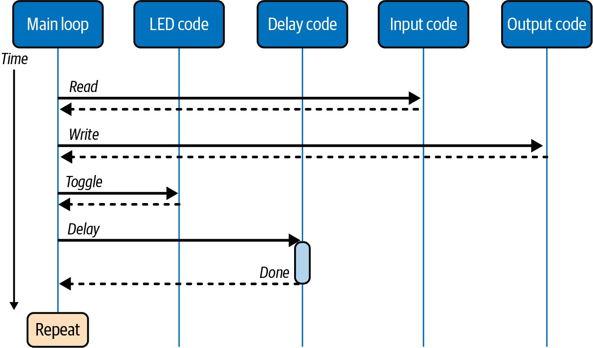
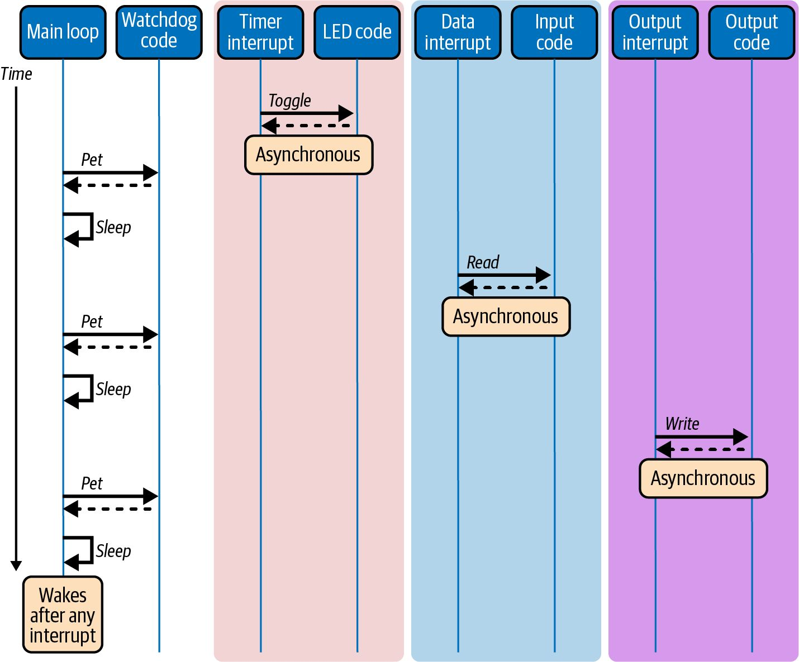
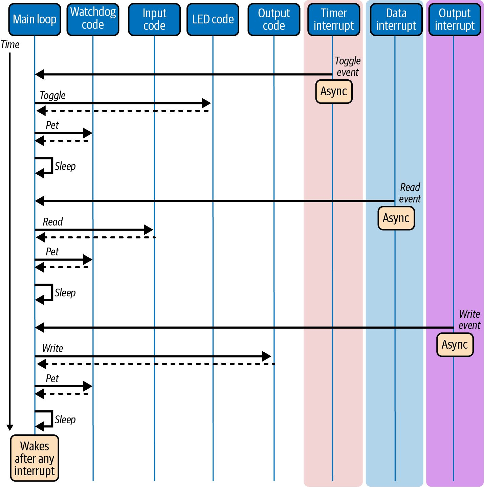
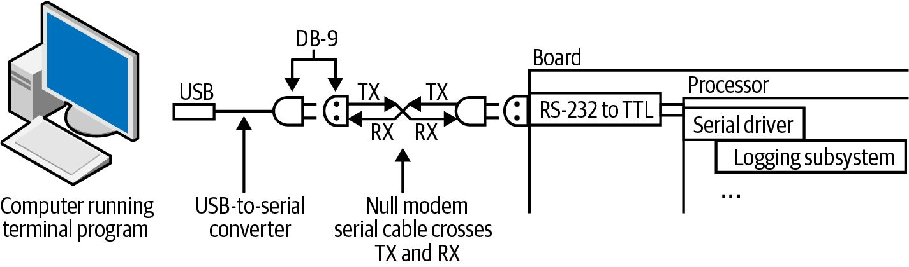

第8章 组合一个系统
Making Embedded Systems — Elecia White 著 | AI 辅助翻译
组装一个系统
在本书的过程中，我们已经探讨了处理器内部发生的事。现在，在你能构建一个系统之前，我们需要考虑系统其他组件中发生的事。与其他组件通信是其中的一个开始。下一步是熟悉常见的外设、数据处理方法，以及使系统适应不同需求的设计模式。 最终，使用外设所需的信息都在它们的数据手册中，但有足够多的共性让你能感觉出该寻找什么。 然而，组装一个系统不仅仅是连接每个部件；你必须开始将系统看作一组协同工作的部件。本章最后部分给出了一些关于数据处理和算法组装的提示。
按键矩阵
你已经在第 4 章中看到了具有简单 I/O 接口的按键。然而，如果你有很多按键（比如键盘），你不需要每个按键一个 I/O 线。你可以创建一个输入线矩阵，从你的 I/O 中获得比预期更多的功能。实现按键矩阵有两种方式：行列扫描适用于需要外设成本低廉的情况，而 Charlieplexing（又称三态复用）成本更高但最大限度地减少了所需 I/O 线的数量。 使用行列扫描，你可以用 M + N 条线实现 M × N 矩阵。所以如果你想实现一个 12 键数字键盘，可以做一个 3 × 4 矩阵，使用 7 条线（远少于直接 I/O 所需的 12 条线）。当然，矩阵输入需要更复杂的软件。
在电子学上，每个按键连接到一行和一列（而不是像直接 I/O 接口那样连接到地输入引脚）。初始化时，配置
所有行连接为输出并设置为高电平。然后，将所有列连接配置为带内部上拉电阻的输入。 注意，将按键矩阵化意味着它们需要被轮询。虽然你可以设置定时器中断来做这件事，但你无法使用处理器中断来告诉你输入何时发生了变化。软件需要不断循环遍历所有行。 当你扫描（读取）按键按下时，将一行设为低电平，读取列的输入，将该行设为高电平，然后继续到下一行。被按下的按键在你读取其列时将为低电平。你需要将行/列值映射到按键的实际含义。图 8-1 显示了带有行列扫描的原理图片段。每个圆圈代表一个按键。

图 8-1 — 行列扫描式按键矩阵
软件扫描的要求也适用于 Charlieplexing。以创始工程师（Charles Allen）命名并在一份应用笔记中被永恒记载，Charlieplexing 需要比行列矩阵方法更多的电子元件（二极管）。与直接驱动用 N 个引脚接收 N 个输入，或行列矩阵用 M + N 个引脚接收 M × N 个输入不同，Charlieplexing 让你用 N 个引脚获得 (N² – N) 个输入。 对于数字键盘上的 12 个按键，你只需四条 I/O 线和 12 个二极管（如果你不关心检测同时按下多个按键，可能更少）。虽然软件比行列矩阵更复杂，但这只是逐步进行的问题，通常作为状态机实现。从将所有相关引脚设为输入开始。对于每个引脚，将该引脚设为输出并设为高电平，读取其他引脚（作为输入）。然后将该输出设为低电平，再次读取其他引脚。然后将该引脚设回输入。每个引脚轮流成为输出后，你可以查找（或计算）哪个按键被按下了。 虽然 Wikipedia 有相关代码，但本书的代码仓库链接了一些以动画形式展示两种按键矩阵以及各自正确原理图的网站。
第8章：组装一个系统
这两种方法在多个按键同时按下时可能给出奇怪且不正确的结果。 行列矩阵和 Charlieplexing 既可以用于输出（LED），也可以用于输入（按键）。每种情况的方法论是相同的，所以一旦你理解了矩阵，你会发现很多地方可以实现它们。
段式显示器
我们已经在第 4 章花了很多时间讨论单个 LED，甚至使用 PWM 控制使其变暗。七段显示器可能是你接下来会看到的最基本的显示器。大多数七段显示器的排列如图 8-2 所示。

图 8-2 — 七段显示器及标准段序（顺时针 ABCDEF，然后 G 横穿中央）
每段 LED 可以用字节中的一位表示（额外的一位有时用于某些显示器上的小数点段）。各段按顺序访问，通常从最高有效位到最低有效位：abcdefg（或有时 gfedcba）。所以如果你想在显示器上显示 3，你需要打开 abcdg 段并关闭 fe 段。使用十六进制，按 abcdefg 顺序，你需要向显示器写入 0x79 来表示数字 3。 这里的实际实现并不那么重要。关键思想是显示器上人类可读数据与代码中表示之间的解耦。要习惯在显示器的上下文和软件的其他部分之间进行映射。 退一步看，你还记得太阳能计算器吗？那种有八位数字（每一位都是七段显示器）的 LCD 显示器？那些在 1960 年代是惊人的技术，但到 1980 年代就被免费赠送的东西？它们还有至少 17 个按键。它们总共可以达到 81 种不同的设置（17（按键）+ 8（位置）× 7（每个字符的段）+ 8（小数点）），但这些计算器内部的处理器并没有 81 条 I/O 线。 如第 211 页"按键矩阵"中所述，你可以矩阵化按键输入：17 个按键可以用 9 条线（4 × 5），你还可以"免费"获得三个额外按键。同样的方法可以用来矩阵化显示输出。 使用行列扫描，对于屏幕上带有小数点的八个字符（64 段），我们可以使用 8 × 8 矩阵，因此只需要 16 条 I/O 线。 对于按键，响应时间取决于行数，因为你将对每列的查看时间切成了那么多片。对于输出，时间片决定了每段可以点亮多长时间。所以，如果你使用 8 × 8 LED 阵列，LED 只有 1/8 的时间是亮的。大多数 LED 非常亮，因此这并不重要。 对于 LCD（如太阳能计算器中的那种），有限的点亮时间会使段看起来褪色且难以看清，特别是在功率低时。 LCD 段不像 LED 那样以恒定的"开"设置运行。虽然 LCD 可以通过矩阵驱动，但这更困难，因为它们需要变化的交流信号。通常你会使用 LCD 控制器，但如果你想尝试矩阵化（或只是想更好地理解它），请查阅 STMicroelectronics 的应用笔记 AN1447。 8 × 8 矩阵非常方便，因为它与我们的字符映射很好地对应。我们可以一次点亮一个字符的全部段，或一次点亮所有的 a 段，然后所有的 b 段，依此类推。两种方法都有效。只要你足够快地刷新显示器（以超过 30 Hz 的速度完成所有段），用户永远不会察觉。 如果你更新太慢，显示器会闪烁。我发现 30 Hz 是一个不错的速率。要测试你的系统，从侧面看它，因为运动在你的周边视觉中更明显。
像素显示器
不幸的是，每个字符七段不足以表示太多内容。你可以选择 14 段显示器来获得适合英文应用的像样字母（或 16 段显示器来包含拉丁字母和阿拉伯数字）。到了某个程度，你不妨使用点阵显示器，用点来构建你的数字、字符和图形。嗯，"点"听起来太普通了。让我们称它们为"图像元素"（picture elements）。不，这太长了，让我们称它们为像素（pixels）。 现在，数字 3 和屏幕上显示内容之间的映射可能比 3 和 0x79 之间更远。你想放到屏幕上的每个东西都需要一个位图来描述哪些位是开的，哪些位是关的。屏幕上出现的一切都是字形（glyph），无论它来自位图还是由代码生成（如图表）。 你所有的位图合在一起称为你的图形资源（graphic assets）。图形资源通常分为字体和其他图形（图片、徽标等）。字体是一组表示一组字符（通常是 ASCII 字符集）的字形。如前所述，设计显示子系统的目标是保持数据的图像与数据本身松散耦合。这让你有更大的灵活性来更改屏幕、为系统换新外观，以及在不同产品中复用你的显示子系统。
显示资源

图 8-3 — 展示了设置图形资源的一种方式。首先，有一个数据表，通常伴有一个头文件告诉你徽标在哪里，或动画的偏移量。版本化该文件（以及资源列表）很重要，因为如果它们在你软件不知情的情况下改变，你可能会在屏幕上显示垃圾内容。
图 8-3 — 图形子系统组织
要将数字 3 放到屏幕上，首先你需要知道要显示哪种 3 的表示：位图是小型的还是填满整个屏幕？是粗体还是斜体？这些选项中的每一个都会指向你的资源中不同的字体集。 一旦你知道了字体，你需要从字符映射到位图，通常通过搜索字符映射来获取位图字形的偏移量。 位图可以存储为单色（每像素 1 位），如图 8-3 所示。然而，看看所有可以压缩的浪费数据。压缩它可能会加快从存储资源的地方（通常是片外闪存）检索的速度。然而，解压数据成为处理器要做的又一项工作，这可能会减慢新字形的显示。 一种完全不会减慢处理器速度的压缩形式是游程编码（RLE, Run-Length Encoding）。相同的数据段存储为单个数据值和一个计数，而不是逐像素复制。当屏幕上有很多相同颜色时，这非常有用。例如，你可能得到一串白色像素（W）和黑色像素（B），看起来像 WWWWBBWWW。这将被编码为 W4B2W3。如果数据以每像素一位存储（因此整个图像只有黑色和白色），这将不会带来任何节省。然而，如果图像是每像素一个字节（或每像素两或三个字节），RLE 可以显著压缩而没有太多处理器开销。 显示子系统最终会将大量数据从一个地方推到另一个地方。单色位图是相当小的。在图 8-3 中，数字 3 字形将是 8 像素宽和 8 像素高，因此可以用 8 字节表示。然而，它可能看起来很糟糕，边缘呈块状。要让它看起来更好，你会想添加抗锯齿（antialiasing），通过放入灰度像素来柔化边缘。图 8-4 展示了对数字 3 位图的一点平滑处理。它使用五个级别，因此需要每像素三位。

图 8-4 — 字符的抗锯齿：使用每像素更多数据使其呈现灰度而非纯黑纯白
有了抗锯齿，位图就不再是单色的了。你可以使用 2、4 甚至 8 位每像素来描述抗锯齿。每像素 8 位编码意味着数字 3 字形占用 64 字节——仍然是非常小的量，但你正在滑向一个滑坡。之前，你整个 A–Z、a–z、0–9 单色字体可以塞进 500 字节，但现在接近 4 KB，而这仅仅是 8 像素高的字母。一旦你有了 2.4 英寸 LCD 显示器（24 位色彩，240 × 320 像素），每个屏幕可达 225 KB。 编写显示子系统通常意味着优化你的代码，使处理这种数据吞吐量的部分不会给屏幕带来问题。大多数 LCD 自动刷新，这意味着显示硬件在屏幕上重绘数据。LCD 一遍又一遍地用相同的图像刷新屏幕，直到你的数据改变。 撕裂（Tearing）是指数据在刷新过程中部分改变，显示一半新图像和一半旧图像。要完全消除撕裂，你需要将图像更新与屏幕刷新同步，并在下一次刷新之前将所有像素设置到目标值（在如此短时间内传输所有数据可能很困难）。 注意，如何将资源打包到存储机制中很重要。除了压缩方面的考虑，你还需要以使空间可用、图形资源存储（通常是闪存）与处理器之间的接口以及 LCD 与处理器之间的接口有意义的方式存储它们。另一个问题也可能侵入：如果你的显示器由于机电要求必须在产品外壳中倒置安装怎么办？这可能需要更多前端处理来以不同方向放置资源，但这比让处理器在每次读取资源时将它们上下翻转和左右颠倒要好。 作为嵌入式系统专家，你并不能免于编写打包数据资源的程序。既然是你要使用这些信息，如果你能控制图形的存储方式，你会发现生活会轻松得多。更多内容见第 220 页的"外部闪存"。 最后，一旦你准备好要发送到屏幕的位图，你需要知道把它放在哪里。图 8-5 展示了屏幕上的数字 3 字形。

图 8-5 — 显示器上显示数字 3
总结一下步骤：
1. 确定屏幕上要显示什么内容以及显示在什么位置。 2. 在资源中查找正确的字体。 3. 在字体中查找字符。 4. 读取位图，可能需要解压缩。 5. 将位图复制到显示缓冲区中的正确位置。 6. 将缓冲区发送到显示器，理想情况下是在上次刷新之后立即发送。 要显示一个标志或其他固定图形，将步骤 2 和步骤 3 合并为一步：查找图像字形。
可变数据？享元模式和工厂模式
这种存储字符和图像字形、在需要时检索它们以显示在屏幕上的方法，符合一种设计模式：享元模式（flyweight pattern）。不过，我描述的方式将其与工厂模式混在一起了，因此更准确地应该称为享元工厂模式（flyweight factory pattern）。让我将两者分开讲解，这样你可以分别理解它们，并能够在 LCD 之外运用这些概念。
218 | 第 8 章：组装一个系统
享元模式的典型示例是一个包含许多字符的文档。每个字符是一个对象，描述字符的大小并封装一个位图。在非嵌入式领域，存在将每个字符对象单独实例化的诱惑。最终，当字符足够多时，这会导致系统变得迟缓。在嵌入式设备中，我们不会有这个问题，因为 RAM 从来都不够多，不会让我们陷入这种麻烦。解决方案是让所有字符指向单个字符对象实例（对我们来说，该实例存储在 flash 中）。 这就是享元模式的核心思想：当你有大量重复使用的东西时，创建一个实例池（每个对象一个实例），然后指向池中的实例，而不是直接实例化每个对象。每个共享对象被称为一个享元（flyweight，就像拳击中的最轻量级，而不是飞轮中增加惯性的重量）。每个享元必须与其他享元相对可互换，尽管它们可以描述自己的状态（例如，一个字符可以描述其宽度，因为不同字符之间的宽度差异是不可预测的）。 工厂模式稍微复杂一些，其核心是工厂方法。还记得第 2 章中的 Unix 驱动模型吗？几乎所有驱动都实现相同的接口（open、close、read、write、ioctl）。如果你正在编写一个使用驱动程序的程序，你会像打开一个文件（/dev/tty0）一样打开它。驱动程序被实例化并作为一个通用句柄返回给你，但在底层它代表一个串行端口。工厂方法（open）知道如何创建一个特定类型的组件（子类），该组件属于一个通用类型（类）。所有的特定组件都实现相同的接口（类接口）。 如果你觉得上一段有点令人望而生畏，图 8-6 可能会有所帮助。它展示了经典的工厂模式图，下方配以 Unix 驱动模型示例，再下面是 LCD 图形示例。工厂模式通常以非常面向对象的方式实现，特定的子类是类的实例化。创建者类（调用工厂方法的代码）控制整个事情。

图 8-6 — 使用 UML（统一建模语言），这是一种用于描述软件（尤其是面向对象软件）的有用可视化语言。它可以很简单（像这样），也可以复杂得多，甚至成为一种可解释的语言。
像素显示器 | 219
图 8-6 — 工厂模式和享元工厂模式示例
工厂模式无处不在，它将实例与通用理想解耦。这是一个相当具象化的模式，所以它的名字很贴切。想象你有一个真实的工厂。它足够灵活，可以制造几种相对相似的产品（产品类）中的任何一种。工厂里有一台机器（创建者）。今天，你通过将一个模板（工厂方法）放入机器中，配置机器来制造链轮（具体产品）。当你按下"启动"按钮时，工厂将生产链轮。明天，你可以切换模板来制造小装置（不同的具体产品），由不同的模板（工厂方法）来保证。 当我们在图形软件中使用享元模式时，按下"启动"按钮更像是软件请求一个字形。在享元工厂模式中，工厂部分管理享元，确保它们被正确共享，并将字符与它们在屏幕上的显示方式解耦。
外部 Flash 存储器
我们已经稍微了解了存储器，以及它是如何分为易失性存储器（系统关闭时丢失数据）和非易失性存储器（在电源循环中保留数据）的。RAM 是最主要的易失性存储器形式。
220 | 第 8 章：组装一个系统
非易失性存储器主要有两种类型：EEPROM 和 flash。EEPROM 通常容量较小，其字节可以单独写入。它们足够简单，数据手册很可能就足以让你的开发顺利进行。 C/C++ 中的 volatile 关键字与易失性存储器的概念不同。这个关键字告诉编译器"此变量可能在当前运行的代码之外发生变化"，而易失性存储器在断电时会丢失其内容。 Flash 由扇区（或页面）组成，这些扇区必须一次性全部擦除（flash 越大，扇区越大）。一旦扇区被擦除，flash 就可以逐字节写入。这一要求增加了许多复杂性。 然而，flash 非常有用，部分原因是它可以非常大。你可能想在其中存储显示资源。Flash 对于那些偶尔发生变化的小量数据也很有用，比如系统复位的原因。如果系统在较长时间内采集数据，但较少上传到其他源，它也可以作为数据存储位置。你甚至可以有文件系统。（我们将在第 9 章讨论固件升级，届时 flash 也会出现。） Flash 几乎总是通过 SPI 来控制，因为它是常见协议中最快的。即使是 SD 卡也可以通过 SPI 访问。 最初，你可以将显示资源编译到代码中，包括一个小字体。有在线工具和 Python 脚本可以将你的图像转换为 C 代码，即一个常量变量数组，表示屏幕上哪些像素将被点亮（或这些像素将是什么颜色）。 然而，如果你的处理器内置 flash 足够大，可以处理一个做少量简单事情的小显示屏，那可能就够用了。一旦你听到"动画"或"国际化"这些词，就要计划使用 SPI flash 来存储字体和图像信息了。 虽然图 8-3 展示了显示资源的良好架构，但实现中存在一些难点。首先，显示资源需要多大？这取决于显示屏的大小，也取决于你需要的字形和字体。 你需要所有的字母、数字和符号吗？英语有 94 个——如果要支持其他语言则更多（法语、意大利语、德语和西班牙语再增加 94 个）。每种字体的每种大小（像素高度和宽度）都需要一套。它们是单位深度还是经过抗锯齿处理以看起来更好？
外部 Flash 存储器 | 221
考虑一种字体，有 94 个字符，8×6 大小，8 位灰度颜色：
• 字体空间 = 字符数 × 像素高度 × 像素宽度 × 颜色位深度 • 字体空间 = 94 × 8 × 6 × 8 = 36,096 位 = 4,512 字节 然而，即使经过抗锯齿处理，这种字体也只适合非常小的文字。对于中等大小的屏幕，我们可能有 30×40 个字符。94 个字符、16 位颜色，那就是 220 KB。字体可能占用大量空间；它们可能比你的代码占用更多空间。 因此，显示资源通常放在外部 SPI flash 上，在需要时加载到处理器中，然后传输到显示接口。令人惊讶的是，第一步是最困难的之一：
1. 计算显示资源需要多少空间：
a. 多少种字体？什么大小？每像素多少位？ b. 多少其他字形/图标/图像？什么大小？彩色还是单色？ c. 将这些加起来，尽量留出至少 25% 的扩展空间。
2. 确定数据的访问方式：
a. 通信总线发送一个数据位需要多长时间？ b. 显示器接收一个数据位需要多长时间？
c. 使用前两项中的最大值，更新整个屏幕需要多长时间？（显示像素数 × 每位最大时间）
d. 如果你有动画或快速变化的区域（想想旋转的"思考中"圆圈），更新屏幕的那部分需要多长时间？（像素数 × 每位最大时间） 3. 获取资源文件（你将放在屏幕上的每个字母和字形的实际图像）。理想情况下，这些文件应该附带某种设备模型，这样你就知道如何分组数据以及将图标放在屏幕的什么位置。你需要让程序能够访问这些数据。我通常会编写一个 Python 脚本来： a. 将图像的文件名映射到代码中的标识符。 b. 将代码中的标识符映射到 flash 中的位置（很可能是从分配给显示资源的区域的起始位置开始）。 c. 添加关于字形应该放在屏幕什么位置的其他元数据（如果有默认位置的话）。在元数据中加入宽度和高度会非常有帮助。 d. 将图像数据按上述顺序打包到一个二进制文件中。
222 | 第 8 章：组装一个系统
到这一步，你可能会有一个头文件，其中包含代码用来指示屏幕上应该显示什么内容的标识符列表。该标识符列表可能会指向它们在打包二进制文件中的偏移位置（以及任何对应用程序有意义的特征，不过你也可以把这些放在二进制文件中）。你还会有一个二进制文件，其中包含所有资源，全部压缩在一起。 接下来，将其编程到你的显示 flash 中，这是另一步听起来容易、应该容易、但可能让你写更多代码的步骤。通常我最终会编写一个调试/制造命令行，从串行端口接收数据并将其放入 SPI flash 中。在制造过程中，可能有一个特殊的 flash 编程器，绕过你的处理器。 到这一步，你可能已经准备好回到编写显示代码的令人满意的工作中。然而，我强烈建议花几分钟时间让你的资源打包脚本更好用一些。这是我经常认为只是临时使用的工具，但结果却被重复使用了很多次。
模拟 EEPROM 和 KV 存储
我希望你的 flash 没有被显示资源填满，因为它还有一些其他用途。我之前提到 EEPROM 是一种比 flash 更小、更直接的非易失性存储器。通常对于 EEPROM，你会设置一个地址列表和每个地址中存放的数据。
地址 数据 大小
0 序列号 4 字节
4 上次启动时间 4 字节
8 上次重启原因 1 字节
9 自初始以来的启动次数 3 字节
12 … 每次系统复位时，你可以更新启动状态信息。这不会改变设备的序列号（"当然不会！"你说，但继续读下去，忽略那可怕的背景音乐）。 从某个角度来看，这是一个微型数据库，你根据地址查找数据。在你代码的某个地方，有一个头文件将 EEPROM 地址映射到你要访问的数据，这样你就可以这样写： uint32_t sn = readEeprom(constSerialNumberAddr, constSerialNumberSize);
或者：
writeEeprom(constLastBootTimeAddr, constLastBootTimeSize, (void*) ¤tTime); 然而，与 flash 存储器相比，EEPROM 昂贵、容量小且速度慢。
外部 Flash 存储器 | 223
另一方面，flash 在写入之前必须先擦除。而且你只能按块擦除，通常每个块有几千字节。此外，如果反复擦除或写入同一位置，flash 会磨损（EEPROM 也会，尽管它们通常有更高的擦写周期数）。 解决方案是键值存储（KV 存储或模拟 EEPROM）。你为一块数据选择一个键（通常是一个数字），然后根据该键查找数据：一个微型数据库。 然而，数据不是存储在 flash 的固定地址，而是作为列表的一部分，处理器通过筛选该列表来找到匹配的键。因此，当你为某个键写入新数据时，之前的数据会被找到并标记为无效，然后将新数据追加到列表末尾。 KV 存储的读写访问需要时间，并且包含状态机来确定它们在查找-擦除-写入循环中的位置。此外，由于它们维护数据列表（包括无效数据），KV 存储占用的空间远大于数据本身所需的空间：你至少需要两个 flash 块，这样一个块存储数据，另一个块被擦除。 我不建议自己编写 KV 存储，因为许多处理器和 RTOS 供应商已经提供了相关代码。要找到它，搜索这两个术语：KV 存储是软件工程的视角，模拟 EEPROM 是硬件工程的视角。两者都会引导你找到功能相同的代码。
小型文件系统
在 flash 上放置文件系统面临与 KV 存储相同的问题：你必须按块擦除 flash，并且不能频繁写入相同的地址。有些 flash 的寿命大约是一万次擦除/写入周期。如果你每秒更新一次特定地址的数据，flash 只能持续不到二十分钟（10,000 次写入 / 60 秒/分钟 = 16.7 分钟）。 Flash 在失效时不会着火。相反，数据位会变得"粘滞"。在向一个地址写入 0x55（"U"）之后，读回来的可能是 0x57（"W"）。当大量使用 flash 时，代码需要检测粘滞位，并将该扇区标记为坏块，以免将来继续使用。 Flash 文件系统需要具备断电恢复能力，这样在更新周期中的随机故障不会导致文件丢失。它们还需要处理磨损均衡（wear leveling），均衡地使用分配给它们的所有块，并且需要识别坏块并绕过它们。哦，它们还需要适应我们的系统，不能占用太多内存或处理器周期。
224 | 第 8 章：组装一个系统
RTOS 的一大优势是它可能为你提供一个 flash 文件系统。还有许多其他裸机文件系统（我最喜欢的是 littlefs，它是众多开源文件系统之一）。¹
数据存储
SPI flash 的另一个常见用途是存储设备采集的数据。这对于产生持续数据流、但以大块突发方式读取的系统特别有用。想想蓝牙连接的计步器或地震传感器：虽然传感器定期获取数据，但它们只在连接时才传输数据。 你可以使用文件系统来存储数据，但这通常会导致过多的开销，flash 访问次数超出必要，并且擦除周期不可预测。我已经提到过，flash 需要擦除整个扇区。我可能还应该提到，擦除 flash 需要似乎无限长的时间：有时是几十毫秒！ 遗憾的是，在这个上下文中，几十毫秒是一个很长的时间。假设你以 20 kHz 的频率记录数据，即每秒 20,000 个样本。样本之间的时间间隔与频率成反比：
样本间隔 = 1 / 采样频率 = 1 / 20 kHz = 0.05 ms
如果该器件的最长擦除时间是 25 ms，那么在等待 flash 完成擦除并可以写入新样本的过程中，设备可能会采集 500 个样本。因此，代码需要为采样子系统分配足够的 RAM 来存储 500 个样本（无论你的样本大小是多少）。 与上面的显示更新问题一样，这些数字是确保处理器和 flash 能够完成你所需工作的必要条件。虽然我将在本章末尾更多地讨论吞吐量计算器，但请开始适应这样的想法：将涉及一些数学运算。电子表格是你的朋友。（本书的 GitHub 仓库中有示例。） ¹ littlefs 很好，因为它解释了许多它所做出的权衡。它可以在 GitHub 上找到。
外部 Flash 存储器 | 225
除了确定 flash 的速度如何影响 RAM 大小之外，你还需要确定要为数据存储分配多少空间。以下是一些帮助你思考的问题： • 采样率和样本大小是多少？ • 是连续采样还是突发采样？如果是突发采样，最长的突发有多长？ • 数据应该多久采集一次？两次传输之间的最长时间间隔是多少？ • 是在传输后擦除数据，还是保留数据以便将来可能重新读取，直到 flash 填满？ • 如果数据从未被采集，应该怎么处理？是用新数据覆盖还是保留旧数据？ 你可能还需要与特定应用相关的其他项目（样本是在什么时间采集的？算法是否将其标记为感兴趣的？样本的位置是什么？等等）。描述数据的数据称为元数据（metadata）。在处理数据存储计算时，很容易忘记这一点。计划一些元数据开销来伴随你的数据（如果你不确定，10% 是一个不错的起始数字）。
时间戳的烦恼
时间戳是最常见的元数据形式。在拥有一个好的时间戳——它不占用太多空间，且具有足够的精度和分辨率——之间需要权衡。虽然使用一个 32 位计数器来描述自上次启动以来的毫秒数非常诱人，但你会发现 2³² 毫秒只有 49 天。一个简单的滴答计数器是不够的。 可能需要一个实时时钟（RTC）。RTC 意味着需要电池或类似电池的电容。当电池耗尽时，当前时间将丢失。哦，你还需要在初始时以及电池耗尽时设置时间。对于数据采集，我建议始终使用 UTC，因为你真的不想处理时区和夏令时的问题。 RTC 的精度取决于它用作输入的时钟的精度。随着温度变冷，时钟会变慢。RTC 通常是准确的，但并不完美。 尝试在不同设备之间同步会导致各种令人头疼的问题。你的服务器可能应该负责，能够对设备进行校正，但如果这还不够好，你可能需要 GPS 来获取更准确的时间源（然后你还需要能看到天空）。许多 GPS 模块输出每秒脉冲（PPS）信号，可用于校正 RTC。
226 | 第 8 章：组装一个系统
总之：虽然把时间戳问题留到以后再解决非常诱人，但这是设计中不应忽视的部分，因为它对整个系统都有影响。或者，永远不要处理时间问题。 一旦你认识到擦除时间的痛苦，并确定了必要的大小，下一个不受欢迎的消息是：系统电源肯定会在最糟糕的时刻断电。一个极端的边缘情况是：数据传输完成，但系统在能够将 flash 标记为可擦除之前就复位了。接收端能处理重复数据吗？ 在擦除过程中断电可能导致数据损坏。这可能很难判断，但解决问题的一种方法是在 flash 的不同部分维护一个修改列表。在修改列表扇区中，编程将要被擦除的地址块。然后执行擦除。然后在修改列表中记录擦除已完成。启动时，遍历列表，扫描任何有开始标记但没有对应擦除完成标记的条目。在某个时刻，这个列表将被填满并需要自身被擦除，因此为修改列表分配两个扇区。 电源也可能在写入 flash 时发生故障。你可以使用相同的修改列表，但如果你写入少量 flash 数据，先写入修改列表，然后放入数据，然后再次写入修改列表，这将变得相当繁琐。相反，我建议加入校验和（checksum）来验证一个数据块是否已完全写入。多久执行一次取决于你的应用：当电源断电时，你可以丢失多少数据？如果你需要每个样本都算数，那么使用较小的块。如果电源循环意味着数据无论如何都会有几秒钟不可用，那么较大的块可能就可以了。 数据存储的另一个考虑因素是检索数据。当连接建立时，读取缓冲数据需要多长时间？你同时在采集新数据吗？Flash 读取很快，所以可能不会造成问题，但你需要检查数字以确保。（更多内容见第 236 页"计算需求：速度与供给"一节。） 但是，说了这么多关于存储数据的内容，数据是什么类型的呢？这就是传感器登场的地方了。
模拟信号
按钮可以称为一种传感器。与按钮通信的方法类似于与传感器通信的方法，选择也类似（例如，中断与轮询）。然而，按钮只有按下或未按下两种状态，而传感器可以提供各种数据——高、低、1.45、10,342.81、12、43 或超出范围。你读到什么取决于你的传感器。
模拟信号 | 227
你的系统可能有自己的输入传感器，同时作为另一个系统的传感器。 麦克风，就像你的耳朵一样，以模拟形式拾取音频。你可以使用 ADC（有时称为 A2D）将真实世界的模拟信号转换为软件友好的数字信号。你的软件可以对数字数据进行各种处理：监视模拟流中的事件、对其进行滤波，或通过 DAC（即 D2A）将其转换回模拟信号。在模拟形式下，信号可以通过扬声器播放。图 8-7 展示了一个简单的系统。

图 8-7 — 模拟到数字到模拟系统
信号是你正在监听的底层事物，无论它当前是数字的还是模拟的。噪声是让你的软件难以正确看到信号的因素。系统的一个目标是确保信号相对于噪声足够大，从而给你一个高 SNR（信噪比）。 数字信号处理是一种软件技术，用于将数据从模拟转换为数字，并且通常做一些处理来理解数据的含义。有时数据被转换为看起来不同的东西。通常这种转换将数据转换为正弦波的组合，因为这些在计算上很容易处理。正弦波是频率（想想广播电台的频率或音乐音高）。因此，这种转换被称为转换到频域。 在图 8-7 中，信号通过将每个整数样本除以 2 来减小。生成的模拟声音应该更安静（衰减），但对于如此小的数字，整数除法不是一个好主意，因此信号的变形比应有的更大。（在 ADC 处接收更高的信号输入，或在 ADC 中采样更多位数，会减少整数数学的这个问题。） 这是一个相对愚蠢的示例，因为你可以在不数字化输入的情况下获得更好的衰减效果。更常见的是，数据经过多个处理阶段。其中一些可能包括滤波（以减少噪声或增强特定的信号特征）、压扩（衰减响亮的段落和/或增强安静的段落）以及卷积（找到隐藏在一个信号中的另一个信号）。
228 | 第 8 章：组装一个系统
ADC 和 DAC 的特性包括其采样频率（它们工作的速度）和位数。8 位 ADC 的数字信号有 256 个级别；16 位 ADC 有 65,536 个级别。你需要什么取决于你的应用，但这两个数字可以决定你的整个软件系统如何组织，通过约束处理器的速度和所需的 RAM 量。你的系统处理数据的速度称为其吞吐量或带宽。 有些处理器是专为信号处理而设计的（数字信号处理器，即 DSP）。它们有特殊的处理器指令，能够比通用处理器快得多地处理信号。 在所有嵌入式系统领域中，信号处理是我最喜欢的。然而，它本身就是一整本书的内容。嗯，两本书，因为你需要理解数学（傅里叶很有趣）以及如何将其应用于实际问题（快速傅里叶变换！）。 我不想让你以为通过这一小节的介绍，你就准备好去做一个出色的模拟系统了。例如，我还没有谈到采样和奈奎斯特频率。要么你已经了解它，要么你需要比这个简要介绍多得多的内容。我在第 239 页的"延伸阅读"中推荐了我最喜欢的信号处理书籍。 我是从麦克风开始本节内容的，但模拟传感器有各种各样的类型：运动传感器（加速度计、陀螺仪、磁力计）、气象传感器（风速、湿度、温度）、视觉传感器（摄像头、红外探测器……），列表还在继续。你可能只有五种感官，但你的系统可以有更多。 我曾经听到一位电子工程师说："所有传感器都是温度传感器，只是有些比其他的更好。"这是真的。传感器会对环境温度做出响应，即使它们本应测量其他东西。预期你需要为系统进行温度校准，如果不需要的话，就松一口气吧。
数字传感器
如果我对模拟传感器和神秘的信号处理领域让你有点紧张，我表示歉意。你会更喜欢数字传感器的。数字传感器会为你完成模数转换，理想情况下直接给你所需的数据。与模拟传感器一样，数字传感器的种类也令人眼花缭乱。虽然数字传感器通常比模拟传感器稍贵，但这个价格通常是值得的，因为它们能产生有意义的样本，从处理器卸载大量工作，并且不太容易受到外部噪声的影响（见第 230 页"EMI：电磁干扰"一节）。数字传感器还可能包含集成滤波器和温度补偿。
数字传感器 | 229
EMI：电磁干扰
当信号沿导线传输时，它们会从周围所有有时钟的东西中拾取噪声。等一下，你说——我的系统有时钟？实际上，可能不止一个。 因此，你不能指望你的模拟系统没有噪声。模拟信号经过的导线就像天线一样，从周围的一切中拾取静电干扰。你的电子工程师可以对信号进行屏蔽，降低其对噪声的敏感性（通常是通过将一个接地的闪亮金属盒子——称为法拉第笼——放在信号周围）。但你仍然可能要担心噪声的问题。 虽然数字信号向环境发射更多噪声，但它们对外部噪声源更具免疫力。 有时，在你能够解决问题之前，你需要找到造成噪声的罪魁祸首。这可能很困难。如果噪声不是来自系统外部，它可能来自你的任何通信路径、任何外设，或你的处理器本身。更糟糕的是，它可能是这些因素的某种组合，协同干扰，产生难以复现的错误。辐射内部噪声并不是唯一的问题。
有时，在硬件调通之后、项目结束之前，你的电子工程师
230 | 第 8 章：组装一个系统
会把你的系统拿去做电磁兼容性（EMC）测试。不同国家有不同的法规（和认证流程），是在该国使用产品所必需的。在美国，如果你的系统有时钟频率超过 9 kHz，就需要通过 EMC 测试，以确保它不会辐射干扰通信的信号（以符合 FCC 第 15 部分的要求）。 这项测试将设备放入电波暗室（anechoic chamber），并在许多无线电频率上进行监测，以查看它是否发射任何超出容许水平的噪声。在准备硬件调通所用的软件时，你可能需要准备一个 EMC 测试版本，通过所有通信路径尽可能快地传输数据，生成通信噪音，以验证你的设备没有过多辐射。 同一个 EMC 测试实验室通常可以用不同频率对你的设备进行轰击，以查看它是否对任何特定范围的噪声敏感。 在阅读数字传感器的数据手册时，你主要关心的是如何与之通信。你的处理器是否具备传感器所需的通信方式？之后，问题的核心是吞吐量：你的软件能否跟上传感器将要发送的数据量？软件要如何处理数据？需要多长时间？它如何知道数据何时就绪？
数据处理
到目前为止，我们已经看到了数据生成者和数据消费者。我们也看到了如何发送和接收数据。然而，这两者之间还缺少一些环节。理解如何在软件中移动数据对于构建一个优秀的系统至关重要。让我们从系统层面处理数据的全局视角开始，然后深入到具体机制。 在第 5 章中，我们研究了事件驱动的系统：事情发生是因为传感器被激活，产生事件，进而导致系统状态的变化。然而，并非所有的嵌入式系统都可以（或应该）设置为事件循环和状态机。 有一类问题，其目标是获取数据、处理数据、对结果做些什么，然后重复。在这种数据驱动的系统中，没有事件，只有不断增长的数据山让你的软件来处理。理想情况下，系统处理数据的速度应该比数据生成的速度略快一点。数据驱动系统的一些示例包括： • 飞机的黑匣子，持续记录音频和遥测数据。 • 枪声定位传感器，监听其环境。在识别到脉冲声音后，生成一个事件发送给主机。 • 侦察卫星，记录图像数据，进行压缩，并（在链路点范围内时）发送到地球。 • MP3 播放器，从其音频存储器读取数据，解压缩，并通过 DAC 发送位数据以生成听起来像音乐的电信号。 • 自动跟随系统，读取位置并调整车辆速度。 数据驱动系统可以通过观察数据流来理解。数据的速率以及需要多快处理这些数据是系统的主要特征。 重启和错误可能导致系统落后。这是一种需要优雅降级的系统类型。如果系统出现错误导致其落后，它应该跳过一些数据来追赶吗？还是应该进行某种降低处理直到系统恢复正常？丢失数据的后果是什么？ 令人高兴的是，实现数据驱动系统相当直接，因为数据的处理是重复的。考虑图 8-7 中描述的模数转换系统，其中数字数据来自 ADC，经过衰减，然后输出到 DAC。系统通常可以分为数据生产者（ADC）和数据消费者（DAC）。这两者必须保持禅意般的平衡。只要
数据处理 | 231
处理器能够跟上 ADC，运行算法并将数据发送到 DAC，系统就可以永远运行下去。 大多数系统同时具有事件驱动系统和数据驱动系统的元素。在考虑你的系统时，尝试弄清楚哪些方面属于哪种类型。这将通过允许你分别实现它们来解开软件的一些复杂性。
变换算法：策略模式
有时，你的代码路径需要根据环境进行更改。如果你在想，我们在第 3 章的命令模式中看到了一种根据主机命令改变代码行为的方式，你是对的。命令模式用于进行短期的命令/响应变更。策略模式用于进行长期的变更，通常是针对数据处理。根据《设计模式：可复用面向对象软件的基础》的官方定义，策略模式用于"定义一系列算法，将每个算法封装起来，并使它们可以互换。策略让算法独立于使用它的客户而变化"。 考虑图 8-7 中的数据驱动系统，其中模拟数据由 ADC 数字化，由处理器衰减，然后通过 DAC 发送回模拟信号。如果你不确定是否要衰减信号呢？如果你想反转它呢？或者放大信号？或者向其中添加另一个信号呢？ 你可以使用状态机，但这会有点笨拙。每次处理循环中，代码都必须根据状态变量检查使用哪个算法。 另一种实现方法是指向一个处理数据的函数（或对象）的指针。你需要定义函数接口，使每个数据处理函数接受相同的参数并返回相同的数据类型。但如果你能做到这一点，你就可以根据命令更改指针，从而改变整个系统的工作方式（或者可能是系统的一小部分修改数据的方式）。 有些嵌入式系统太过受限，无法在运行时更改算法。然而，你可能仍然希望在开发过程中使用策略模式的概念来切换算法。策略模式帮助你分离数据和代码，并对不同的算法强制执行相对严格的接口。
232 | 第 8 章：组装一个系统
一个相关的模式是模板模式（template pattern）。模板提供算法的骨架，但允许步骤变化（而不改变算法的结构）。通常这些不是函数指针；这些步骤是算法组织的一部分。在我们的数据驱动系统中，我们可以制作一个如下所示的模板： class Template { private: struct sCircularBuffer *cb; public: enum eErrorCode sample(); enum eErrorCode processData(); enum eErrorCode output(); } 尽管这些函数都有相同的原型，但与策略模式不同，它们是不可互换的。相反，它们提供了系统如何工作的轮廓。对于所描述的系统的模板实例化，将使用 ADC 采样数据、数据被放大、DAC 输出结果。模板的实例化可以重写默认实现的某些（或全部）部分。例如，如果默认实现设置了"ADC-处理-DAC"的顺序，则测试版本的类可以重写采样函数以从文件中读取数据，而保留其他两个函数不变。
你当然可以组合使用模式。以下是模板骨架中的策略模式：
class Template { private: struct sCircularBuffer *cb; public: enum eErrorCode sample(); enum eErrorCode (*processData)(); enum eErrorCode output(); } 面向对象软件有继承（inheritance）的概念，其中实例是对象的具体版本。模板模式类似于此（模板是一系列这样的步骤）。另一种方法是组合（composition），其中软件拥有对象的具体版本。策略模式更像是这样（它们提供一个可调用的函数）。组合比继承更灵活，因为切换对象拥有的东西比切换对象是什么更容易。另一方面，在运行时构建（组合）一个系统可能不是有限资源的良好用途。为你的系统权衡利弊。
算法阶段：管道和过滤器
有时处理数据需要多个步骤。管道（pipeline）是一种设计模式，其中每个处理步骤的输出是下一个步骤的输入。通常，类比是一条装配线，上面有部分组装的物品从一个工位移动到另一个工位，或者一堆待洗衣物：有多个阶段，每个阶段
数据处理 | 233
都需要在过程继续之前完成。这些步骤称为过滤器（filters）（尽管它们可能与信号处理中的滤波器不是一回事！）。它们也可能被称为阶段（stages）或处理单元（processing elements）。
如图 8-8 所示，假设我们有一个采集数据的系统，可能是一个心率监测器：
1. 数据作为样本从 ADC 进入系统。 2. 样本经过处理以去除噪声。 3. 然后通过低通滤波器去除不同的噪声。 4. 算法部分选择要保留的两个通道的数据。 5. 缩减和滤波后的数据存储在数据存储中。 6. 缩减和滤波后的数据进行降采样。 7. 降采样后的数据作为滚动窗口滚动图表显示在显示器上。

图 8-8 — 一个心率监测器示例的管道视图（顶部）和软件框图（底部）
噪声去除和低通滤波器是管道的一部分。这些处理对来自 ADC 的每个样本进行：一个样本进入，一个修改后的样本以恒定的数据流输出。重要的是要注意，样本是按接收顺序处理的。为了实现这一点，对于某些过滤器，样本需要被
234 | 第 8 章：组装一个系统
缓冲，这样当你放入一个样本时，你得到一个较旧的样本。缓冲导致数据延迟（data latency）（这与系统延迟很相似，但是针对数据的）。如图 8-9 所示，这种延迟会随着每个过滤器累积。 当修改后的数据准备好进入数据存储时，它可能被分成块以限制 flash 访问次数。不是一次写入一个样本，而是一次写入多个。 你也可以将管道视为消息队列，其中过滤器阶段处理每条消息，将结果写入另一个消息队列。

图 8-9 — 管道的时空图：跟踪样本 0 通过一个 3 点噪声滤波器和一个 16 点低通滤波器到达数据选择器和数据存储，延迟随着每个缓冲的管道单元累积
虽然存储可以被视为管道的一部分，但它是一个端点，一个消费者，而不是一个过滤器。数据可能会继续到其他过滤器：
• 找到滤波后数据的最大值和最小值 • 如果最大值-最小值足够大以至于有趣，则用卷积处理低通滤波后的数据以找到有趣事件的开始 • 报告事件时间和有趣的特征（如最小值和最大值） 这些过滤器与之前的过滤器不同，因为它们处理的是窗口化数据（windowed data）：你不想要全程的最小值和最大值，目标是找到较短时间段内的特征。例如，你可能不期望看到心率快于每分钟 250 次，并据此选择窗口大小。窗口通常有重叠，以防感兴趣的事件位于两个窗口的边界上。
数据处理 | 235
如果你去查找管道设计模式或管道与过滤器设计模式，你可能会看到它被标记为主要在你有多个可以并行处理过滤器阶段的处理器时有用。不同的过滤器是将处理分解以便共享的好方法。 我向你保证，管道模式在嵌入式环境中非常有用。就像状态机一样，大多数系统都有可以被视为管道的方面。管道模式是思考数据如何在系统中移动的好方法：以什么速度、是恒定吞吐量还是窗口化数据块、以及不同大小的数据。如果你以这种方式思考数据流，你可以将过滤器分解开来单独测试，使它们更可读，并可能可重用。
计算需求：速度与供给
很容易迷失在系统的低级细节中：试图将 I2C 传感器样本放入循环缓冲区，然后输出到 SPI flash，然后计算图表并将其发送到显示器。每个部分都需要专门的软件。然而，随着你做更多的系统设计，会有系统级的问题需要考虑。我在本章中一直在撒面包屑；现在是时候把它们整合起来了。 目标是根据产品功能确定部件的规格（或根据可用部件更新产品功能）。就像管道一样，这是将系统一个部分的输出连接到下一个部分的输入的问题。 我经常使用电子表格来确定系统的所有部分是否可以连接在一起。
数据带宽
回到图 8-8 中的心率监测器，ADC 提供数据。但是什么样的数据？ • 采样率是多少？每秒多少个样本？通常以赫兹（Hz）为单位。 • 样本中有多少个数据通道？ • 每个样本有多大？通常以位为单位。 假设我们有一个 SPI 四通道 16 位 ADC，以 44.1 kHz 采样。系统每秒处理多少数据？
带宽 = 采样率 × 通道数 × 样本大小 = 44,100 × 4 × 16 = 352,800 字节/秒
236 | 第 8 章：组装一个系统
当你查看 SPI 时钟时，你需要接收那么多数据。你的 SPI 时钟是否快到足以传输那么多数据？（暂时假设 DMA 正在工作，因此传输开销最小。）
传输时钟（最低）= 带宽（以位计）= 352,800 × 8 = 2.8 MHz
如果 SPI 总线与其他外设共享，它仍然足够快吗？即使另一个外设是显示器？还是 flash？所有这些都加起来，因此你需要确定每个设备使用了多少总 SPI 带宽。计算正常（标称）值和最坏情况值，以确保你有余量。 到目前为止，我们讨论的是连续采样。你也可能有突发采样，例如记录一个有趣事件持续 4 秒。这将给你一个总记录片段大小为：
片段大小 = 带宽 × 长度 = 352,800 × 4 = 1.3 MB
如果你的处理器只有 512 KB 的 RAM，这怎么处理？你需要片外 RAM 作为临时存储吗？（是 SPI 接口的吗？需要纳入时钟速度计算吗？） 你能足够快地将数据写入 flash 吗？如果目标是记录（有或没有突发），你需要回到 flash 数据手册，看看它是否能跟上。将数据吞吐量表示为字节/秒将帮助你汇总共享总线并比较不同的资源。 那么，如何将数据从设备中取出呢？（更多内容见第 10 章。）你是否必须在读出数据的同时继续采样？

图 8-10 — 展示了该系统的一些速度和供给信息。每个步骤的计算都在本书 GitHub 仓库中的"速度与供给计算器"中。
对于每条总线和每个外设，你需要估计使用了多少可能的吞吐量。有些总线很简单；对于使用率很低的 I2C 加上几个简单传感器，你可能甚至不需要计算器。然后对于每个处理单元，你将需要一个缓冲区来存放处理所需的样本。但嵌入式系统是专用应用；它们通常对成本敏感，因此除非你能证明它们是必要的，否则额外的 RAM 和更快的 SPI 设备可能不会出现在你的物料清单上。
计算需求：速度与供给 | 237
图 8-10 — 将系统视为一系列具有输入、输出、缓冲区和维持所需带宽的单元
内存吞吐量和缓冲
大多数微处理器在芯片上同时具有易失性（RAM）和非易失性（flash）存储器。这很方便，但对于许多应用来说还不够。外部 RAM often used to buffer data, stage screens for display, or temporarily hold data. Display assets, file systems, long-term data storage, and firmware updates are often put into external flash. | Chapter 8: Putting Together a System 内存通常是一种共享资源，被系统的不同部分所使用。正如你在第2章中可能记得的那样，共享资源会增加系统和代码的复杂性。互斥锁是必需的。除此之外，闪存在擦除或访问大型显示资源时可能处于忙状态。这是一个优先级反转可能导致系统锁死的领域，因为多个任务都在等待闪存系统完成命令。 虽然内部存储器的访问也需要时间，但通常不会成为问题，除非你试图榨干处理器的每一个周期，或者正在写入内部闪存（通常用于固件更新）。如果有太多不同的子系统试图访问闪存的不同部分，外部存储器可能成为瓶颈。正如"外部闪存"（第220页）中所述，擦除比写入耗时更长，写入比读取耗时更长。因此，KV存储的一次不合时宜的擦除操作可能会导致数据存储写入或显示资源检索的延迟。 在审视你可用的存储器类型时，你需要估算每种存储器将使用多少，以确定是否有足够的空间来满足预期目的。
在审视存储器时，以下是一些需要问的问题：
• 它有多大？不要被以兆比特（Mb）而非兆字节（MB）给出的存储器容量所欺骗！ • 读写存储器需要多长时间？这可能取决于通信带宽以及存储器特性。 • 一次需要擦除多少？擦除操作需要多长时间？ • 它可以被重写多少次？闪存只能被擦除和重写有限的次数。 虽然我们经常考虑将外部外设连接到处理器的协议，但在系统设计过程中，这些连接更多地涉及每个元素如何流动，这意味着要关注带宽和缓冲区。你的设备可用的存储器类型和速度限制了应用程序。 Further Reading 本章涵盖了很多内容，所以如果你想深入研究某个特定领域，我有很多地方可以推荐。正如本书其他地方所提到的，Erich Gamma 等人的《Design Patterns: Elements of Reusable Object-Oriented Software》和 Eric Freeman 等人的《Head First Design Patterns》是理解设计模式的绝佳参考。 信号处理和电机控制在底层数学（拉普拉斯变换和傅里叶变换）方面有很多共同点。如果你在学校没有学过这些（或者记不起来了），你可能需要考虑上一门课。这不是那种能从书本上学到的东西。但如果你坚持要学，经典的教材是 Alan V. Oppenheim 等人的《Signals and Systems》（Prentice-Hall 出版）。 或者，你可以通过一本非常棒的书直接跳到实际应用：Steven W. Smith 的《The Scientist and Engineer's Guide to Digital Signal Processing》（California Technical Publishing 出版）。该书也可在线免费获取。 如果你真的想理解流水线，可以看看 GStreamer，一个用于音频和视频处理的开源工具。它功能极其强大，但也异常复杂。 随本书配套的 GitHub 仓库中有一个电子表格，展示了"计算需求：速度与数据供给"（第236页）的计算过程。 Interview Question: Designing a System 设计传感器系统时，你会考虑哪些因素？ 有时面试问题的目的是确保面试者会提出问题。当然，他们可以用陈述来回答：电源、连接性、操作环境、关键性、精度、成本等等。当然，我希望他们提到流水线和带宽。 然而，我真正想看到的是他们何时停止回答我的问题，开始提出自己的问题。当一个人停止被动反应，开始变得好奇时，这是一种很了不起的表现。你无法强迫这一点，尤其是在紧张的面试情境中。但你可以通过像这样的面试问题来激发它。 他们提出的问题将揭示他们如何思考系统。他们最初的问题将展示他们的经验。
我必须承认，我对这个问题的回答会是一连串的问题：
• 这个设计是针对同构传感设备的分布式网络吗？还是单个设备？ • 如果它与另一个系统通信，是连续的信息流还是突发性的？如果无法通信该怎么办？如果长时间无法通信呢？ • 传感器需要的精度和准确度水平是什么？输出呢？ • 信号是否要监控异常？数据是否要存储？ • 可能需要进行什么样的处理？可用的处理能力如何？信号需要多少处理？数据是在本地处理还是远程处理？每个阶段允许的延迟是多少？ Chapter 8: Putting Together a System • 指定了哪些传感器，为什么选择它们？它们的失效机制是什么？ • 传感是以固定间隔进行、按需进行，还是响应某种事件？ • 它需要在什么样的环境中工作？是否有与尺寸相关的要求？它将如何安装？ • 它将使用什么样的电源？是否必须用电池供电？ • 操作对某些事情是否至关重要？如果失败，后果（影响）是什么？低电量或其他故障应如何处理？ • 预算是多少，成本目标是什么？ • 用户是谁？ 详细的初始问题很可能是对之前项目中不该做的事情的反思。你总是可以追问为什么某一点很重要。希望你能听到一个他们至今仍在思考的项目。 更重要的是，这些问题将表明他们会提出问题。我不打算声称没有问题是不好的问题。但问题表明这个人在思考某件事，而不是被动地接收信息或机械地回答。问题是他们参与其中的标志。即使是看似愚蠢的问题也表明了这一点。而且通常，它们并不像听起来那么愚蠢，只是从不同的参考框架提出的。
（感谢 Embedded.fm Slack 的成员们分享他们对这个问题的看法！）
Further Reading CHAPTER 9 Getting into Trouble 我已经谈过边开发边测试和单元测试的重要性。然而，有时仍然会有bug。如果你知道问题出在哪里，你早就修复了。除非你正坐在沙滩上读这本书（这是推荐的），否则你可能正在寻找关于当前问题的具体建议。如果我坐在你旁边，我的心理检查清单会是这样的： • 设备通电了吗？你确定吗？ • 你确定设备正在运行你认为它在运行的代码吗？ • 你能只测试系统的那一部分吗？ • 你检查芯片的勘误表了吗？你检查芯片的型号了吗？ • 如果问题是间歇性的，是时序错误吗？栈溢出？ • 是否与未初始化的变量有关？将变量变成全局变量会让情况变好还是变糟？ • 你能关闭优化，看看问题是否仍然存在吗？ • 你看过映射文件了吗？（更多内容见第11章。） • 紧急情况下（以及随机的荒谬错误）：会不会是接地回路问题？ 你会惊讶地发现，问题常常在前几步就被发现了。这些问题来自于犯错的经历，来自于失败后再次尝试，来自于找到问题后才后悔没有先检查那里的经历。 制作你自己的检查清单。了解你自己常见的问题。虽然我会更详细地讲解我清单上的许多项目，但让你的清单随着你的经验而增长吧。 在大多数情况下，我不想讨论那些可以通过编译器警告、代码审查、单元测试和调试器单步执行发现的错误。我想讨论的是真正陷入困境的情况：优化问题、不可能的bug、硬错误和内存问题。然而，在我们讨论这些之前，我需要简短地谈谈编译器。 Fighting with the Compiler Optimizations 我最糟糕的bug往往是拼写错误，那些我看不见的问题，因为我的眼睛没有注意到问题所在。因此，我喜欢编译器警告，尤其是指出我在条件表达式中写了赋值语句的那个警告： if (i = OH_NO_THIS_IS_WRONG) {}
而不是：
if (i == YES_I_MEANT_TO_DO_THIS) {} 让编译器或静态分析工具告诉你这些问题是一份礼物。善用它们。启用所有你能启用的编译器警告，然后修复所有警告。这是调试代码的第一步。 我知道供应商代码并不总是能无警告编译。我认为你不应该修改它，除非必须（通常是为了认证原因）。因为修改后更新到新版本的供应商代码会很痛苦，我建议用注释标记你的修改，以便你能轻松移植更改： // START_MY_COMPANY_MODIFICATION … // END_MY_COMPANY_MODIFICATION 另一个选择是在源代码控制中将未修改的供应商代码副本与你的代码一起保存为补丁文件。 困难bug与编译器相关的一个问题是由编译器优化引起的。编译器重新组织代码使其更快。许多变量被放入寄存器并提前消除。 突然间，你无法再单步执行代码，因为调试器在来回跳转，反映的是优化后的操作顺序，而不是逐行执行。当你检查一个变量的值时，调试器告诉你它不存在。 更糟糕的是，有时当你打开优化时，你的代码开始做奇怪（错误）的事情。这几乎从来不是编译器的错。别再责怪编译器了。真的，是你的代码的问题。我很抱歉。 Chapter 9: Getting into Trouble 偶尔，这确实是语言的问题。当语言中存在未定义行为时，编译器可以自由地以它们认为合适的方式实现，这意味着不同的编译器会做不同的事情。这在编译器作者试图做最聪明的优化时最为常见。 优化本应改变时序：它们使系统更快。不幸的是，如果你的代码依赖于一点点延迟或精确的操作顺序，当你开启优化时它就会出问题。 更常见的问题会出现在变量上。 优化器会移除它们认为无用的代码。如果你不使用某个变量，它就会移除该变量，即使它是一个全局变量，比如在中断中设置并在循环中监视的标志。在没有优化的情况下，编译器会允许这种低效——两个函数读写一个似乎从未被使用的变量。但一旦你要求编译器变得聪明，它就会注意到那个循环是愚蠢的，什么也没有发生。所以它不需要运行循环，也不需要保留那个标志变量（尽管你我都知道中断会在主循环范围之外修改该变量）： #include <stdio.h> int global = 0; // 此处没有 volatile，下面的 while 循环可能被优化掉 void isr(void) { global = 1; } int main(void) { global = 0; while (1) { if (global == 1) { printf("Interrupt occurred!"); } } } 当你开启优化时，代码中（据称）未使用的部分会被移除。 最后，优化会改变变量的处理方式，通常会暴露初始化和内存越界的问题。没有优化时，你的变量可能存在于RAM中，松散地散布在各处。一旦它们被紧凑地打包在一起，它们的值更容易因为差一错误而被覆盖，或者字节对齐突然变得重要。 Fighting with the Compiler Optimizations 未初始化的全局变量和静态变量在代码初始化时被设置为零。函数的局部变量则不是！未初始化的函数局部变量包含随机值！
因此，如果一段代码在开启优化后开始表现异常：
• 确保在中断和非中断空间中使用的变量标记为 volatile。 • 暂时将变量改为全局变量（从而将它们全部初始化为零）。 • 暂时在数组末尾添加空间，以检查差一错误。 • 降低系统速度（使用临时的周期性延迟，或者用一个中断并浪费一点时间的定时器）。 如果以上任何一种方法使代码正常工作，你就有了开始深入挖掘问题所在的切入点。 当你开始重度优化时，可能会陷入更加难以言喻的麻烦。无论是随机崩溃还是随机行为，没有人喜欢那些当你注释掉一行调试打印就消失、或者天气晴朗时就消失的海森堡bug。 Impossible Bugs 永远不应该存在"不可能"的bug。代码应该总是能编译并第一次就能正常工作。"应该"是一个愚蠢的词。 解决不可能bug的关键是让它们变得可能，停止思考它们怎么可能不会发生，而是深入探究它们是如何发生的。有两种方法可以做到这一点。 第一种方法是专注于复现bug。第二种方法是专注于解释bug。你应该两者都用，在一条路径上卡住时切换到另一条路径。 Reproduce the Bug 对于第一条路径，第一步是复现bug，这似乎是显而易见的，但这是关键的一步。即使你必须单脚跳着学鸡叫，你也必须让它再次发生。一次又一次。那些似乎不重要的步骤如果正是复现bug的方式，也需要记录下来。一旦你做到了这一点，就可以继续其他步骤： 1. 复现bug。 2. 用最少量的代码复现bug。 | Chapter 9: Getting into Trouble 3. 回到上一个正常工作的版本：它仍然能工作吗？你能找到bug是何时引入的吗？ 4. 能够按需（或在启动时）复现bug，这样你就不需要做十步来复现它。尽量减少复现bug的步骤。 5. 在进行探索性调整后，你确定正在运行你认为的代码吗？ 6. 这真的是复现bug所需的最少代码量吗？ 当你得到最小代码集后，你可以将问题发布到供应商网站上，或者使用调试器探索根本原因，或者向其他人求助。更常见的情况是，在你到达第6步之前，你已经卡住了。所以你需要切换策略。 Explain the Bug 当有人向我求助一个bug时，我做的第一件事是让他们解释他们试图做什么。我已经不再惊讶于他们在独白进行到一半时就自己走开了。 解释bug有助于你更好地理解它，并看到你意图做的事情与实际发生的事情之间的脱节。这是一种比复现bug更需要思考的行动。以下是步骤： 1. 描述bug的症状。 2. 解释这个bug怎么可能做到它所做的事。列出所有可能的原因（不要用接地回路来解释[但宇宙射线是可以的]）。 3. 向一只橡皮鸭解释这个bug以及你尝试过的方法。¹如果你意识到忘记了尝试什么，记下来。
4. 记录哪些更改产生了哪些效果。（第三次调整或第四次测试尝试之后，你不会记得的。）
5. 找出自上一个已知良好代码以来的变化。 6. 进行代码审查。 描述问题似乎很容易，但只说"它不工作"是不够的。哪里不工作？与预期有什么不同？是单一版本的代码吗？是在单块板子上吗？要详细。 ¹ 我总是在桌上放一个毛绒玩具。我把它借给需要倾听对象的人。我很惊讶地发现这是一种官方的调试技术，叫做橡皮鸭调试法。我更喜欢我的毛绒恐龙，但各有所好吧。 Impossible Bugs 第二步假设bug确实存在（这比听起来更难），然后建议使用归纳推理来找到原因。这与大多数调试相反：不是找到问题的原因，而是试图找到所有可能的原因。你甚至可以更进一步：如果你想刻意制造这种情况，你会怎么做？ 解释bug只能带你走到一定地步。你可以发展出许多理论和想法，但之后你需要获取一些数据，这意味着回到复现bug。你无法修复你无法测量的东西。 Creating Chaos and Hard Faults 硬错误是由处理器识别出与代码执行相关的（潜在）灾难性问题而引起的中断。这些通常是非可屏蔽中断（NMI；你无法禁用它们）。那么，如何制造硬错误呢？ 哦，你以为我要告诉你如何避免硬错误？不，理解处理器为什么要给你发情书（异常）的最好方法是看看它们在你不疯狂地试图修复代码时长什么样。 尽管调试硬错误很痛苦，但要庆幸它们存在。至少有什么东西在试图告诉你出了什么问题。 我将向你展示一些硬错误、它们是如何发生的，以及处理器能告诉你什么。这个列表并非详尽无遗，有些可能不是你的系统能够发出的错误。 如果你运行这些可怕的示例代码，你可以了解当你的代码做出可怕的事情时你的系统会如何响应。 Dividing by Zero 显然，除以零是错误的。如果有人成功地做到了这一点，我得到可靠消息说，这一行为将产生一个奇点，导致一个黑洞吞噬整个星系（也许是宇宙；我怎么会知道呢？）。 int divide_by_zero(void) { int a = 1; int c = 0; int b = a/c; return b; // 强制编译器实际执行这段代码 } 那么如果你调用这段代码会发生什么？在Linux机器上，你会得到一个异常终止的进程（SIGSEGV 或 SIGFPE 或 SIGsomething）。 在 Cortex-M 上，如果你的配置和控制寄存器（SCB->CCR）不会在除以零时产生错误，你会得到结果零。或者，如果你的CCR设置为让你知道这些错误，你会在用法错误状态寄存器中看到 DIVBYZERO 位被置位，这会导致硬错误——一个可能让处理器停止运行的非可屏蔽中断。它可能会导致复位，或者等待看门狗定时器引起复位。 Chapter 9: Getting into Trouble 除非你深入挖掘代码，否则你的硬错误处理程序通常会跳转到一个占位中断处理程序，那个引起复位或无限循环的处理程序。 当然，很容易看出除以零示例代码做了什么。但当它隐藏在数千行复杂的信号处理代码中时就不那么容易了。处理器错误处理程序的目标（它们看起来就像中断处理程序，因为它们都在向量表中）通常是缩小问题发生时处理器所在位置的范围。栈可以用于确定错误发生前处理器的位置。稍后会在"创建核心转储"（第256页）中详细介绍。 Talking to Things That Aren't There 我们都知道不能访问空指针。当然不能。但为什么呢？ 嗯，空指针是一个被设置为零的指针。那个零是内存中的一个地址。它可能是处理器闪存的起始地址。或者它可能什么都不是：一个没有关联存储器的地址。
我们将指针设置为NULL，这样我们就知道该指针不应该被使用。看看这段可怕的代码：
int* global_ptr_to_null = NULL; int* global_ptr_uninitialized; void write_to_null(void) { int* ptr_to_null = NULL; int* ptr_uninitialized; *global_ptr_to_null = 10;
/* 尝试写入地址零 */
*global_ptr_uninitialized = 10; /* 尝试写入地址零 */
*ptr_to_null = 10; *ptr_uninitialized = 10;
/* 尝试写入 ?? 某个地方 ?? */
// … 函数剩余部分
global_ptr_uninitialized 是一个未初始化的全局变量。全局变量很狡猾；它们被自动（隐式）设置为零，与那些显式设置为 NULL 的变量相同。 当地址零是闪存或者没有实际存储器与该地址关联时，写入零地址可能导致硬错误，可能是数据访问错误或总线错误，具体取决于你的处理器、硬错误配置寄存器和存储器配置。 这不仅适用于 NULL。写入任何没有实际存储器关联的地址都可能导致错误，前提是处理器被配置为识别这些情况。 Creating Chaos and Hard Faults 代码中的最后一个 ptr_uninitialized 尤其麻烦。它可能等于任何值，包括有效的内存地址。这比硬错误更糟糕。除非你运气好，该地址不重要或无效，否则写入这个指针可能……有时可以工作。这个指针指向哪里取决于栈上当前有什么，这很像说"取决于随机性"。 Watchpoints: Data Breakpoints 观察点是一种断点形式，它在访问内存中的某个地址时停止，而不是在程序计数器到达目标时停止。 当由你的处理器在硬件中实现时，观察点非常棒。调试器会在代码修改内存位置时停止。 如果你的处理器不支持观察点（或者你使用了太多），那么数据断点就变成了软件观察点，调试器会在每个时钟周期检查你是否在访问该内存。这非常慢，调试变得相当困难。 你有多少个观察点以及它们的工作效果取决于微处理器。但如果你有它们，它们在查找栈溢出和内存错误方面非常方便。 Running Undefined Instructions 接下来在这个"只应为娱乐而运行、绝不应无意中运行"的展示中，我们来看坏代码。这不是普通的坏代码，而是处理器无法执行的代码： void (*fun_ptr)(void);
// 全局变量默认为零
void call_null_pointer_function(void) {
fun_ptr(); /* 将执行地址零处的代码 */
} int illegal_instruction_execution(void) { int instruction = 0xE0000000; int (*bad_instruction)(void) = (int(*)())(&instruction); return bad_instruction(); } call_null_pointer_function 代码执行地址零处的代码。对于内存从地址零开始的系统，第一个项目通常是复位处理程序的地址。那个地址本身会是有效代码吗？还是会得到一个指示非法指令的硬错误？ Chapter 9: Getting into Trouble illegal_instruction_execution 函数将 0xE0000000 作为指令执行。这不是我当前处理器上的有效指令，所以我总是得到一个非法指令硬错误。这个行为在这里很明显；你当然不会在你的代码中这样做。 这通常是因为函数指针出了问题。如果你从RAM中运行代码（为了更新闪存或因为它更快），内存问题可能覆盖正在运行的代码，导致非法指令和其他形式的混乱。 Incorrect Memory Access (Unaligned Access) 假设你有一个32位处理器，你想只写入一个字节……等等，这是怎么做到的？如果你的处理器有32位（4字节）寄存器，你如何访问一个字节？
这取决于处理器。许多处理器有指令允许它们访问更小的内存块。对于那些没有的，编译器会将32位值截断为适合8位值：
uint8_t unaligned_access_ok(void) { uint32_t bigVariable = 0xAABBCCDD; uint32_t *ptr = &bigVariable; uint8_t smallVariable = *ptr; return smallVariable; } 然而，如果你对指针进行更复杂的操作，比如试图访问数组中间或打包结构体中间的32位值，那么这就不是编译时变量类型匹配的问题了。以下是一些可怕的代码，试图从一个六字节数组中间取出四个字节： uint32_t unaligned_access_bad(void) { uint8_t buffer[6] = {0xAA, 0xBB, 0xCC, 0xDD, 0xEE, 0xFF}; uint8_t i = 1; uint32_t val_BB_to_EE = *((uint32_t *)( &buffer[i] )); return val_BB_to_EE; } 这段代码可能可以工作：你的处理器可能会为字节缓冲区做额外的字节访问工作，即使这比字（32位）访问慢得多。或者这段代码可能导致硬错误，处理器抱怨内存未对齐或总线错误。或者，你的编译器可能对你的处理器有足够的了解，生成额外的代码（以浪费处理器周期为代价让你更轻松）。 Creating Chaos and Hard Faults 如果你看到内存对齐错误，你正在寻找代码从字节数组中访问更大变量的情况。这可能是一个数据流或一个固定的常量数组。 Returning a Pointer to Stack Memory 这段可怕的代码有什么问题？ int* dont_return_stack_memory(void) { int stack_memory[100]; return stack_memory; } 在第129页的侧边栏"栈（和堆）"中，我用一张图展示了栈由每个函数使用的内存组成。当新函数被调用时，局部变量和栈帧被添加到栈上。参见图9-1。
图 9-1 — 栈是函数调用和局部变量的短暂列表
然而，当函数返回时，所有这些内存都消失了。它会被下一个被调用函数的信息覆盖。栈上的内存是短暂的：函数运行时存在，但函数返回时就消失了。你不能指望变量被初始化为任何值；它等于之前调用留下的任何东西。 上述代码的问题在于 stack_memory 变量只存在于函数内部。将栈内存返回给调用函数就像递给它一颗手榴弹。另一个函数调用将覆盖这些数据。更糟糕的是，如果你到处传递这个指针，写入该内存可能会导致栈帧丢失。栈帧是指回前一个被调用函数的映射。如果你丢失了它，处理器将随机运行，可能最终以某种硬错误结束，不过在造成相当多的混乱之后才会如此。 Chapter 9: Getting into Trouble
然而，这不是栈错误：
int* dont_return_malloc_and_freed_memory(void) { int memory = malloc(100); free(memory); return memory; } 我的意思是，这也不是好事。但没有人监控堆。当另一段代码分配该内存时，同一个内存位置会有两个不同的使用者。像这样的bug不会得到特殊处理，因为没有针对这种情况的硬错误，这可能是灾难性的，因为对该内存的更改可能是无意的。 Stack Overflows and Buffer Overflows 你有没有想过栈溢出错误如何导致设备被黑客入侵？以下是一些可怕的代码，展示了简单的姓名输入表单如何导致接管整个系统： void unbounded_fill_from_input(char* name) { int i = 0; char ch; ch = getchar(); while (ch != '\n') { // 等待换行符 name[i] = ch; i++; ch = getchar(); }
name[i] = NULL; // NULL 终止字符串
} void overflow_the_stack(void) { char name[MAX_NAME_LENGTH]; printf("Hello! Tell me your name: "); unbounded_fill_from_input(name); printf("Hello %s", name); } 即使 name 变量的大小 MAX_NAME_LENGTH 设置得足够长，这也无关紧要；输入长于 MAX_NAME_LENGTH 的姓名的人会溢出 name 缓冲区。然后会发生什么？ 看图9-1，如果 localArray 写到了其边界之外（溢出），它可能写入 heapPtr 和 heapPtr2 的值。然后它们指向随机内容。你将无法释放它们的内存，尝试写入这些虚假地址可能会导致硬错误，因为你试图访问处理器上不存在的内存。 Creating Chaos and Hard Faults 在我们当前的代码示例中，name 在栈上，因为它是一个局部变量。然后调用了 unbounded_fill_from_input，所以栈帧在 name 缓冲区之后。除了局部变量，栈帧还告诉处理器返回到哪里。一个了解这些的黑客可以在栈帧有返回地址的地方放入一个不同的RAM地址。当函数结束时，处理器会跳转到黑客提供的新的返回地址，该地址很可能指向RAM中可运行的代码（作为姓名输入的）。 许多编译器内置了栈粉碎保护（SSP）选项。它们在函数被调用时在栈上创建哨兵（也叫金丝雀值）。在退出函数时，如果哨兵被修改，它们会调用一个失败函数，而不是正常返回。 无界输入和其他用户输入问题除了导致缓冲区溢出外，还可能导致栈溢出。通常用户输入是用递归函数解析的。当太多函数被调用时就会发生栈溢出：太多变量加上栈帧，最终填满了链接器为栈分配的空间。其效果类似于缓冲区溢出，包括黑客可以使栈指针移动到他们想要运行的代码而不是你意图的代码的那部分。 然而，与缓冲区溢出一样，最常见的原因通常更简单：设计或实现中的错误。栈溢出经常出现在RAM受限的RTOS系统中，每个任务都有自己的栈，但开发者忽视了调用栈需要多深。 Debugging Hard Faults 一切都出了可怕的问题。现在怎么办？ 如果你知道问题出在哪里，弄清楚它是如何发生就容易得多。幸运的是，硬错误会帮助你确定问题发生的位置。这是处理器特定的，所以请查阅你的手册。我将给出一般性的概述，然后给出 Arm Cortex-M 处理器的代码。你需要的步骤是： 1. 找到处理器发给你的关于出错原因的信息。 2. 找到栈并查看你在哪里（以及关于你在做什么的一点信息）。 3. 将这些数据存储到RAM中的一个特殊位置，以便在重启时可以记录它。 | Chapter 9: Getting into Trouble Processor Registers: What Went Wrong? 一旦命中硬错误中断，你就知道你的系统处于某种糟糕且可能脆弱的状态。第一步是保存这个状态，以便我们以后可以确定出了什么问题。 这是少数几个仍然几乎总是用汇编来完成的领域之一。幸运的是，它通常在C/C++文件中，但预期会看到硬错误处理程序以类似这样的内容开头：² __asm volatile( "tst lr, #4 \n"
// 测试 lr 中的位以确定使用哪个栈指针
"ite eq \n"
// 接下来是条件执行
"mrseq r0, msp \n" // 如果该位被设置，使用 msp 栈寄存器
"mrsne r0, psp \n" // 否则该位未被设置，使用 psp 栈寄存器
"b fault_handler_c \n" // 调用 C 函数
) 嗯，这相当糟糕，更糟糕的是 Cortex-M 处理器有两个栈指针：主栈指针（msp）和进程栈指针（psp），后者可被RTOS用于运行任务。总之，这里发生的是栈指针被传递给 fault_handler_c 函数。那些汇编指令的目标是让我们进入C代码，在那里事情看起来不会那么糟糕。 下一步是确定发生了哪些错误。Cortex-M 有几个错误状态寄存器，涵盖内存错误、总线错误和用法错误（如除以零）。虽然翻阅文档来解码每个寄存器做什么似乎是件麻烦的工作，但处理器正在拼命地告诉你出了什么问题。你必须去看。
让我们从一个非常简单的C处理程序开始：
void fault_handler_c (unsigned long *hardfault_args){
__asm("BKPT #0\n"); // 进入调试器
while(1) { ; }
// 自旋直到看门狗复位
} 如果调试器已连接（尽管该断点行的语法可能因处理器/编译器组合而异），这将导致一个断点。如果调试器未连接，此代码将在 while 循环中自旋。当硬错误发生且调试器停止时，你可以手动查看描述错误的处理器寄存器。 ² 如果你的硬错误处理程序是空白的，参见 Interrupt Blog 的"How to Debug a HardFault on an ARM Cortex-M MCU"。它不仅是一个极好的资源，还有很好的硬错误处理程序代码。如果你使用的不是 Cortex-M 处理器，请在线搜索硬错误处理程序。虽然我在这里讲解步骤，但自己实现它们是很耗时的。 Debugging Hard Faults 如果幸运的话，你的调试器会显示一个栈追踪，带你回到问题开始的地方。 一旦你知道出了什么问题以及在哪里出的问题，一切就都好办了。通常如此。有时如此。也许吧。嗯，至少这是问题终点在哪里的一个良好开端。你可以开始顺着这条线索找到问题的起点。 然而，我们很少能如此轻松地调试。发生在你桌面上的问题比发生在现场（或任何不是你桌面的地方，没有连接调试器的地方）的问题容易解决得多。 Creating a Core Dump 你需要代码给自己写一份备忘录，指示出了什么问题。（我们称这份备忘录为核心转储。）这意味着记录错误寄存器和栈信息。不幸的是，当处理器已经处于糟糕状态时，将核心转储写入闪存或通过某种通信方式发送可能会导致更多麻烦。
解决方案是执行以下操作：
• 将核心转储写入RAM。 • 在重启时，检查那块RAM中的信息。 • 清除那块RAM，以便我们知道它无效。 这实际上有点奇怪。上电时，RAM将处于无效状态（我们不知道它是全零、全一还是某种组合）。所以我们的核心转储需要某种东西来表明它是有效的。 此外，在复位后，经过C启动代码，我们所有的全局变量要么被清零，要么被设置为其初始化值。因此，这个核心转储不能放入全局变量中。它不能放在栈上，因为栈可能已经作为硬错误的一部分被破坏（而且重启后的处理器怎么知道旧栈指针在哪里？）。出于同样的原因，它也不能放在堆上。 因此，这不能放在RAM中。等等，不，真的，我们要把它放在RAM中，但不是放在那些段中的任何一个。 相反，我们要做一些狡猾的事情。我们将从处理器整体中窃取一些RAM，给它一个名字，然后在C代码中链接到这个名字（或地址）。虽然这块RAM将是处理器正常RAM的一部分，但它不会是你程序正常RAM的一部分，因为我们要改变你的程序看待内存布局的方式。 Chapter 9: Getting into Trouble 这要从链接器文件开始。链接器文件是嵌入式系统中那些几乎没人愿意谈论的神秘话题之一。我将从链接器脚本的入门开始，但预计将来会有更多内容。 Intro to Linker Scripts 虽然你可能在让代码工作时见过链接器脚本，但很可能它是一个随编译器或供应商SDK一起提供的文件，你不需要打开它。在你的源代码被编译和汇编之后，目标文件（和库）被链接器组合成一个可执行文件。生成的代码有四个主要段：
bss 段
包含未初始化的全局变量。这将放在RAM中。这个奇怪的名字是由于历史原因，这里不关心。
数据段
包含已初始化的全局变量。这将放在RAM中。数据段可能包含 bss 作为子段。它也可能包括堆和栈。
文本段
包含代码和常量数据。这可能放在只读存储器或RAM中。
向量段
文本段的一个特殊部分，包含用于处理中断的异常向量表。 链接器读取一个文本脚本来确定输出的内存布局。要移动代码或将缓冲区放在特定地址，你需要修改链接器脚本。 不要从头开始编写。当你构建可执行文件时，它已经有一个链接器脚本，通常以 .ld 结尾。找到现有的那个并修改它。（或者查找专门针对你的处理器的示例，从那个开始。）
例如，如果我们的系统有用于存储和运行代码的闪存以及一些内部RAM，内存映射可能如下表所示：
地址 大小 存储器类型 可以放置在此的段
0x000000 0x10000 只读存储器（闪存） 文本、向量
0x010000 0x08000 内部处理器RAM 文本、向量、数据和 bss
一个表示该内存映射的简单链接器脚本如下所示：
SECTIONS {
/* 内存位置在闪存中；在此位置放置后续命令 */
. = 0x000000; Debugging Hard Faults Code : {
*(.vectors) /* 将中断表放在内存的最开始位置 */
*(.text) }
/* 现在将所有内容放入RAM */
. = 0x08000; Data : { *(.data) *(.bss)} } 这个脚本非常依赖顺序。行 . = 0x000000 表示光标（下一个段将被放置的位置）在 0x000000。接下来的几行表示将 .vectors 和 .text 放在一个名为 Code 的段中。 更复杂的链接器文件会定义内存的大小和地址，以便链接器在段不适合其分配的空间时给出错误。此外，还会指定存储器类型（可读、可写或可执行）以启用更多的错误检查： MEMORY {
/* 定义每个内存区域 */
Flash (rx) : ORIGIN = 0x000000, LENGTH = 0x10000 Ram (rwx) : ORIGIN = 0x010000, LENGTH = 0x08000 } SECTIONS { Code : { *(.vectors) *(.text) } > Flash Data : { *(.data) *(.bss) } > Ram } /* 64k */ /* 32k */ 链接器脚本可能会变得非常复杂。不要陷入细节之中；重点关注地址以及它们如何与表格对应。学习这门语言，从做一些小的修改开始，然后查看程序输出的映射（map）文件来观察效果。（关于阅读映射文件的内容将在第11章讨论。）与许多脚本语言一样，构建一个复杂到无人能解读的链接器脚本是很容易的事。请小心行事。如果你一开始面对的就是一个棘手的链接器脚本，请参阅第262页的"延伸阅读"。 要创建核心转储（core dump），首先我们需要抢占一些RAM并将其链接到一个名称（_coredumpBuffer）： MEMORY { Flash (rx) : ORIGIN = 0x000000, LENGTH = 0x10000 Ram (rwx) : ORIGIN = 0x010000, LENGTH = 0x07F00 DumpRAM (rwx) : ORIGIN = 0x017F00, LENGTH = 0xFF